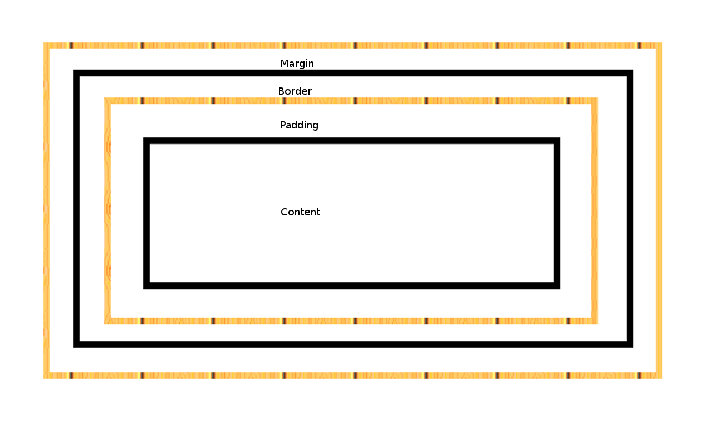

These three properties provide the foundation for the box model of html elements; we define their dimensions and this allows us to space elements as we wish. The following diagram provides some insight into how this model works.
The innermost property of the box model, besides the content, is the padding, a transparent layer around an html element that gives it some initial seperation from other elements. If an element has no border, we can simply use padding in order to give it some empty space between other elements. Just as with margin, we can use either pixels or em (a scale unit of measurement between different platforms) to define just how big we want our padding to be. Another common property between the two is that we can define padding dimnesions all in one line, with the numbers representing top, right, bottom, and left, in that order. The follwing code gives an example:
p { padding: 1px 5px 10px 5px; }Or we can identify each uniquely with the tags padding-top, padding-right, etc.
p { padding-top: 1px; padding-right: 5px; }Next is the border, which surrounds the padding and of course the element itself. We can color and stylize this property in order to give our elements a visual outline. This tag has more properties than its neighbors, we can define border-width, border-style, and border-color. Thankfully these names are all self-explanatory! There are a myriad of ways to define these properties, so it's probably best to do some research on your own to find out the all of them, but there is one I would like to talk about. The shorthand property for border allows us to define border-width,-style, and -color, in that order. I provide an example in the following code.
p { border: 2px dotted blue; }It really is that easy to define our borders.
Similar to how the padding gives the element space, the margin gives the border seperation from other borders or elements, if we wish. The coding has an identical style to padding, so look at the examples from earlier and simply replace "padding" with "margin" to begin experimenting with giving margins to your elements!